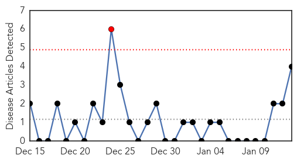
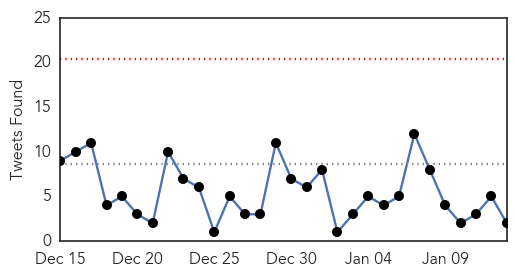
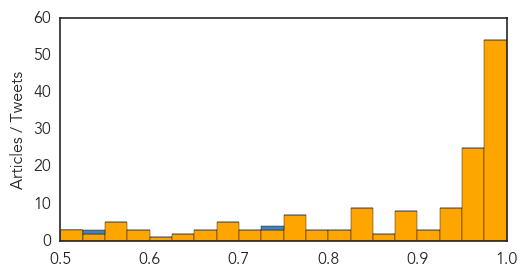

Hepatitis
30-Day Web Trend
1 alerts, 0 warnings

30-Day Twitter Trend
0 alerts, 0 warnings

Article Locations

Article Confidences
Top Articles:
Top Tweets:
-
No tweets found for Jan 13, 2015
Ebola
30-Day Web Trend
0 alerts, 0 warnings

30-Day Twitter Trend
0 alerts, 0 warnings

Article Locations

Article Confidences
Top Articles:
- 1.000
- The Ebola Virus: What's next for the virus?
- 1.000
- Denver patient tests negative for Ebola
- 1.000
- Latest Ebola News: UK nurse infected with Ebola out of danger
- 1.000
- Ebola crisis update - 13th January 2015 - Sierra Leone
- 1.000
- Sierra Leone better positioned now to fight Ebola: U.N.
- 0.999
- MSF opens Ebola clinic for pregnant women
- 0.999
- Containing Ebola Fear Before the Virus Threatens
- 0.999
- Liberia says limits Ebola spread to just two counties
- 0.999
- Ebola Forces Secret Societies to Curb Circumcision Rites
- 0.998
- Liberia Progresses in Fight Against Ebola
- 0.998
- Colorado patient tests negative for Ebola: state health officials
- 0.998
- Ebola outbreak: US Centres for Disease Control director 'confident' disease will be eradicated
- 0.998
- Ebola Epidemic May End By June 2015 in Liberia
- 0.998
- One single case of Ebola can re-start an outbreak anytime, anywhere: Interview with ECHO expert in Liberia - Liberia
- 0.998
- Government of Canada deploys a third mobile laboratory team to provide enhanced Ebola clinical testing in Sierra Leone
- 0.997
- Tamahere nurse Robby Berghan heads to Sierra Leone to fight Ebola
- 0.997
- China sending large Ebola relief team to West Africa
- 0.997
- Manchester Ebola scare: Patient still being treated at hospital ahead of blood test results
- 0.997
- CDC Director Dr. Tom Frieden 'Confident' World Can Get To Zero Ebola Cases
- 0.997
- U.S. CDC director 'confident' world can get to zero Ebola cases
- 0.996
- Ignore predictions of lethal pandemics
- 0.996
- American doctor who survived Ebola ventures back to virus-stricken Liberia
- 0.996
- U.S. doctor who beat Ebola heading back to Liberia
- 0.996
- WHO, International Community Cannot Escape Ebola Blame
- 0.996
- CDC chief: Why I have hope about 2015 Ebola fight
- 0.996
- China Sending Large Ebola Relief Team to West Africa
- 0.994
- Liberia's Ebola epidemic could be eliminated by June, researchers say
- 0.994
- CDC: Soldier found dead in Texas ‘highly unlikely’ to have had Ebola
- 0.994
- China Dispatching a Large Ebola Relief Team to Liberia and Sierra Leone
- 0.994
- After Ebola, WHO blames governments and seeks more clout
- 0.993
- Ebola Response Provides Key Lessons for Risk Communications
- 0.992
- Manchester Ebola alert: Patient in scare does NOT have deadly virus
- 0.992
- Ebola-hit countries express to gratitude to Saudi King for donation
- 0.991
- Shropshire doctor delighted as Ebola nurse is on the mend « Shropshire Star
- 0.990
- Manchester Woman In Ebola Isolation
- 0.989
- Ebola outbreak: US Centres for Disease Control director 'confident' disease will be eradicated
- 0.988
- Uneven Distributions: What we talk about when we talk about Ebola
- 0.987
- Ebola Fight and the Social Media
- 0.987
- Uneven Distributions: What we talk about when we talk about Ebola
- 0.986
- Saah Joseph Ebola team ready for Sierra Leone
- 0.986
- Massachusetts Doctor Who Survived Ebola Returning To Africa
- 0.985
- U of T public health students send Ebola equipment to Sierra Leone hospitals
- 0.984
- Ebola: The Nexus of Religion and Health
- 0.984
- China-team cures three Liberian Ebola patients - Headlines, features, photo and videos from ecns.cn
- 0.984
- CDC director 'confident' can get to zero Ebola cases
- 0.983
- China-team cures three Liberian Ebola patients
- 0.983
- West Africa after Ebola: Focus on Health Systems, Households, and Firms
- 0.981
- Public relieved after Liberia halts Ebola cremations
- 0.980
- Toddler killed in Baltimore row house fire
- 0.979
- Ebola survivors in Sierra Leone key in training health providers
Showing top 50 articles...
Top Tweets:
- 0.895
- The fight against Ebola far from over. CDC has 200 public health professionals fighting outbreak in W Africa. http://t.co/XXyFtxCe5t
- 0.819
- Ebola Hampering Household Economies across Liberia and Sierra Leone http://t.co/wl4l8iOZNS
- 0.798
- Sierra Leone. Ebola takes mental health toll where 'life has frozen' in SierraLeone http://t.co/CdE3m4EOM8
- 0.795
- Ebola Could be 'Levelling Off' in Sierra Leone: WHO http://t.co/EXb9f8f9vc
- 0.755
- Ebola "patient zero" may have been infected by a bat http://t.co/TV2TQvKv25 TackleEbola
- 0.727
- FAO Guidance note on prevention and preparedness measures proposed for West African areas not affected by Ebola http://t.co/IkYKxm7Vny
- 0.721
- What the ebola outbreak can teach us about stronger health systems, Dr Anna Miller of in http://t.co/qv7K9lMoQv
- 0.714
- Ebola Kills Nearly 500 Health Care Workers http://t.co/8l0NwMsIli
- 0.707
- The Ebola outbreak is not over. What concerns the experts the most via http://t.co/wH7vTsI7IF TackleEbola
- 0.692
- Today's news update on avianflu avianinfluenza Ebola EbolaResponse MERS birdflu http://t.co/N7WmovbRjJ
- 0.671
- RT: CDC director confident that Ebola cases in west Africa can be reduced to zero http://t.co/rQKFPEw427
- 0.606
- I would like to work again as a nurse and help sick people - Kemo, Ebola Survivor, Guinea. EbolaResponse http://t.co/GQOjSBUJCi
- 0.593
- UN News - In Liberia, UN Ebola mission chief commends progress, warns against 'complacency' http://t.co/X1xgP1WEhE
- 0.557
- RT: What can critical care providers learn from infectious disease outbreaks? @FierceHealth article http://t.co/BTGS9fQWE2 ebola …
- 0.541
- The fight to end the Ebola crisis continues. Our latest shipment to protect the Ebola fighter http://t.co/H3DSxqvYfV http://t.co/hkh3MuT7bY
- 0.534
- A big part of CDC’s Ebola response incl. building systems to prevent future epidemics. @CSIS globalhealthsecurity
- 0.518
- Ebola takes mental health toll where 'life has frozen' in Sierra Leone http://t.co/s9Wzgk8V3Q TackleEbola http://t.co/I60JbMsPo5